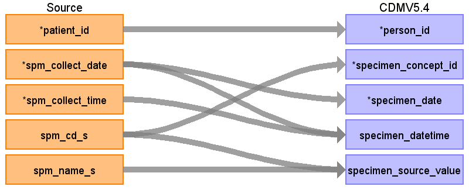

ターゲットテーブル:specimen
・当テーブルは主にObservationResultから作成される。
・ObservationResultの材料標準コードを ATHENA Vocabularyを介したstandard conceptへの変換後、standard conceptのdomainが "Specimen" で定義されているデータが格納される。
本項では、ObservationResultをもとに生成された、specimenテーブルの各項目のとの出力結果の対応を記載する。
・specimenは同一患者、同一採取日時、同一材料コードで１レコードになるよう集約を行う

| Destination Field | Source field | Logic | Comment field |
|---|---|---|---|
| specimen_id | 一意の連番を設定する
（同一採取日時同一材料コードで複数レコード存在する場合は１レコードに集約する） |
||
| person_id | patient_id | person.person_source_valueと結合してperson_idを取得・登録する |
|
| specimen_concept_id | spm_cd_s | specimen_concept_idに変換
Source_to_concept_map: VocabID:RINCHU_SPM_CD DomainID:Measurement |
臨中標準材料コードをsource_to_concept_mapを介してSNOMED,LOINC他のStandard Vocabularyに変換する |
| specimen_type_concept_id | 32817（EHR）固定とする | ||
| specimen_date | spm_collect_date | 検体採取日をそのまま登録する |
|
| specimen_datetime | spm_collect_date spm_collect_time |
CASE
WHEN spm_collect_time = '999999' OR spm_collect_time IS NULL OR spm_collect_time ~ '^[0-9]{6}$' = false OR SUBSTRING(spm_collect_time, 1, 2)::integer >= 24 OR SUBSTRING(spm_collect_time, 3, 2)::integer >= 60 OR SUBSTRING(spm_collect_time, 5, 2)::integer >= 60 THEN TO_TIMESTAMP(spm_collect_date || '000000','YYYYMMDDHH24MISS') ELSE TO_TIMESTAMP(spm_collect_date || spm_collect_time,'YYYYMMDDHH24MISS') END AS start_datetime |
検体採取日＋検体採取時刻を登録する |
| quantity | （設定しない） | ||
| unit_concept_id | （設定しない） | ||
| anatomic_site_concept_id | |||
| disease_status_concept_id | （設定しない） | ||
| specimen_source_id | （設定しない） | ||
| specimen_source_value | spm_cd_s spm_name_s |
COALESCE(spm_cd_s, '') || '|' || COALESCE(spm_name_s, '') AS source_regvalue |
臨中標準材料コード＋臨中標準材料名称を登録する |
| unit_source_value | （設定しない） | ||
| anatomic_site_source_value | （設定しない） | ||
| disease_status_source_value | （設定しない） |